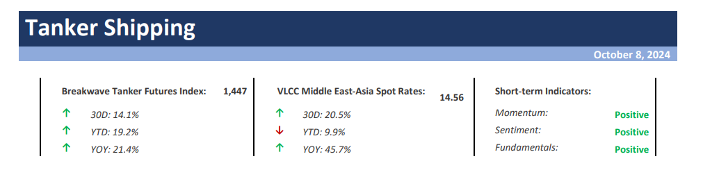
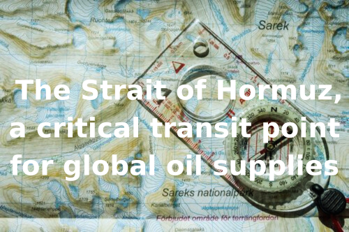
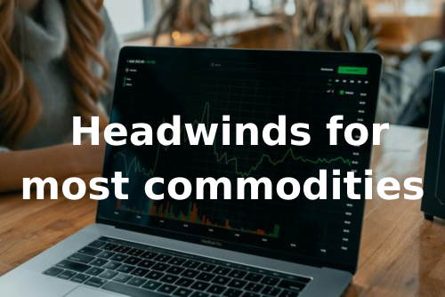
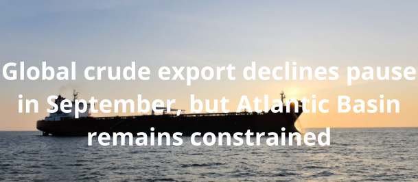

As we conclude the workweek and head into the weekend, take a moment to review the key articles from this week, including those you've highlighted.Ηeadwinds for most commodities,The Strait of Hormuz, a critical transit point for global oil supplies,Chinese Stimulus,The Big Picture: Australian coal exports
and more.
VLCC Rates Jump Amid Geopolitical Turmoil but Demand Risks Remain– The VLCC market in the Arabian Gulf (AG) experiencedtwo distinct halvesat the beginning of October.

Transport authorities project that 1.94 billion trips will be made during this year's holiday week, a slight increase from last year and nearly 20 percent higher than 2019 levels.
Read More
Doric Weekly Market Insight
Chinese oil demand has been underwhelming this year.
Gibson Tanker Market Report
China’s “stimulus bazooka” was the biggest news in the market last week, but also important is that the central government announced that it will be strictly limiting the construction of new housing.
Read More
From Commodore's Weekly Dry Bulk Reports
Metal and energy markets came under pressure after China failed to deliver fresh stimulus measures.
Read More
Commodities Wrap
The main objective of central banks is to curb inflation. But what is the mission in a world that deflates? Does one cease to care, or do they expand the job?
Read More
Forvis Mazars Weekly Note

Tensions between Israel and Iran have risen sharply after Iran fired over 200 missiles at sensitive Israeli sites in one of the most significant escalations in recent years.
Read More
Intermodal Weekly Market Report

The Baltic Dry Index declined for a seventh consecutive session on Tuesday, but unlike recent days, only the capesizes contributed to the loss.
The Fix - Global Market Update

Global crude/condensate exports from non-sanctioned suppliers stood almost unchanged in September, despite sharp reductions from some key producers during the month.
Vortexa Freight Weekly
Suezmaxes laden with Middle Eastern crude/condensates (excl. Iran) are increasingly heading towards the Atlantic, rather the Pacific Basin
Read More
Vortexa - Global Freight Snapshot
Our first commentis that it has been thermal coal behind most of August’s export improvement,
Braemar Weekly Dry Market Report
Overall dry bulk spot freight rates decreased last week, with only handysize rates rising.
From Commodore's Weekly Dry Bulk Reports
This week's focus is on the increasing dependence of Southeast Asian countries on dry bulk coal flows, particularly as China and India are expected to reduce their share in the coming months.
Signal Ocean - Dry Weekly Market Monitor